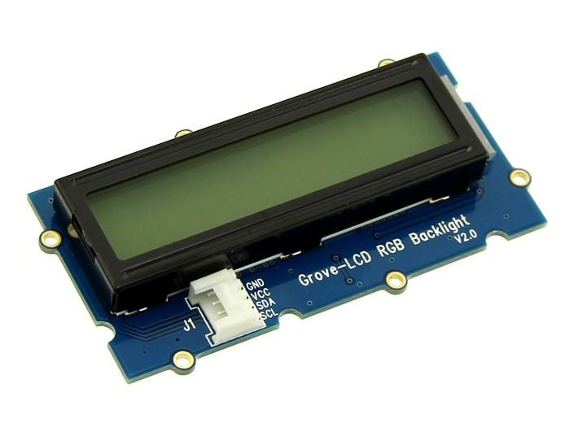

Today ,I will give you an example to show how the grove-lcd module be applied to arduino platform and mbed platform by using one and the same suli-compatible library.I will list the detailed steps as usual .

Figure 1 the grove-lcd module
1.The grove-lcd module used on arduino platform
For arduino ,we should put suli arduino folder into the library folder .Click here to download the folder and then find the suli arduino folder to copy.
This is a grove-lcd module ,you can download the corresponding library here. After uncompressing the folder ,cope the folder into the library folder .
Generally,for arduino, there will be some examples in the corresponding suli compatible library folder .So there is no need to write one by yourself . You can just open the example folder ,chose one of the examples to run .Here we select “hello world ” .
With the software prepared,the next phase is connecting hardwares ,and it is very simple. Figure 2 illustrates the program run results and the connection between the seeeduino and the grove-lcd module.
Figure 2 the grove-lcd module
2.The grove-lcd module used on mbed platform
For mbed, this is different, you should have a mbed account first, then built a new blank program .Click here to download the suli mbed folder ,compress suli mbed folder into a zip file again, and import the zip file into the blank program as a library in the mbed online-complier.
Likewise ,we download the same library of the grove-lcd module here first , and what is different here is that we only need to find the .cpp file and the .h file in the folder , then compress them into a zip file .Finally, import the very zip file into target program as a library in the mbed online-complier .
For embed,we do not have the example folder ,so we should write one by ourself . The code is shown as follows:
#include "mbed.h"
#include "Suli.h"
#include "LCD_RGB_Suli.h"
I2C i2c(P0_5, P0_4);
int main()
{
rgb_lcd_init((&i2c), 16, 2, LCD_5x8DOTS); //initialize the module
rgb_lcd_setRGB(50, 0, 0); //set the color
rgb_lcd_setCursor(5, 0); //set the position of cursor
rgb_lcd_print("hello world"); //display the string
}
With the software prepared,the next phase is connect hardwares ,and it is very simple. Figure 3 illustrates the program run results and the connection between the seeeduino and the grove-lcd module .

Figure 3 the grove-lcd module
These are one of typical examples to illustrate how to use a suli-compatible library and it will be more in subsequent articles .
Copyright (c) 2008-2016 Seeed Development Limited (www.seeedstudio.com / www.seeed.cc)